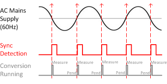

The CapTIvate peripheral provides a mechanism for pending the start of a conversion on a hardware event. Two different hardware events are available: an external edge on a digital input pin, or an internal timer trigger.
The first option, an external edge trigger, might be used for a variety of reasons. For example, a measurement could be delayed to be triggered exactly on a 60 Hz zero crossing detection in a noisy environment. Or, multiple CapTIvate MCUs could be synchronized to a clock edge to begin measurement at the exact same time, minimizing ground loading on a large panel. The measurement may be triggered on either a rising edge or a falling edge by setting the Input_Sync parameter.

The second option, an internal timer trigger, exists to provide wake-on-touch capability by allowing the CapTIvate internal timer to be used to start measurements at periodic intervals without CPU intervention. The timer triggered conversion is enabled by toggling on the Timer_Sync parameter.
Implementation Notes
Pending on an input sync means that each time cycle in a sensor will pend on its own individual sync event. For example, a sensor with
3 time cycles would take 3 sync edges to complete measurement. Be aware that if the sync event is slow (60 Hz, for example) the delay
associated with waiting for the sync can become noticeable and effect the maximum achievable report rate.
Affected Software Parameters
The Input_Sync parameter corresponds to the
ui8InputSyncControl
member of the
tSensor
type in the CapTIvate Touch Library.
The Timer_Sync parameter corresponds to the
bTimerSyncControl
member of the
tSensor
type in the CapTIvate Touch Library.